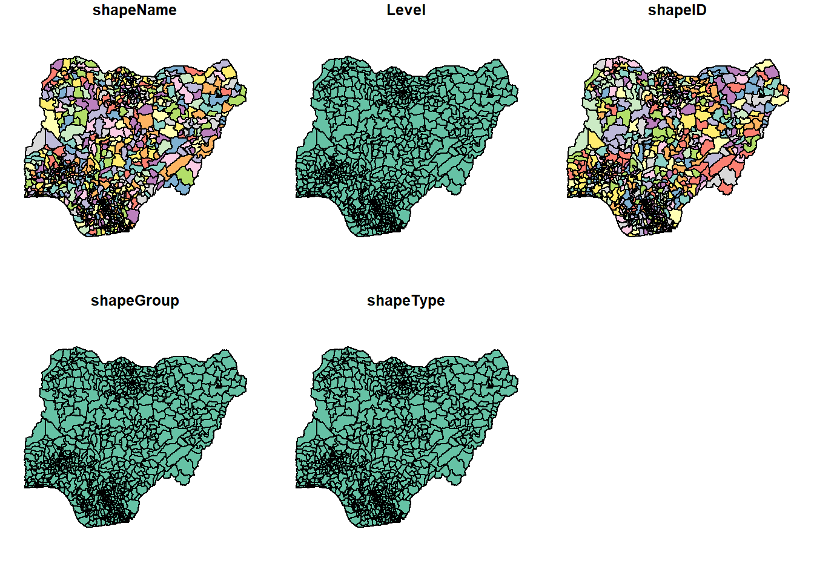
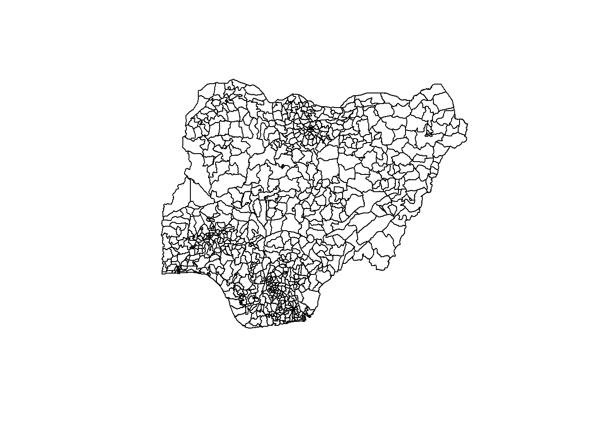
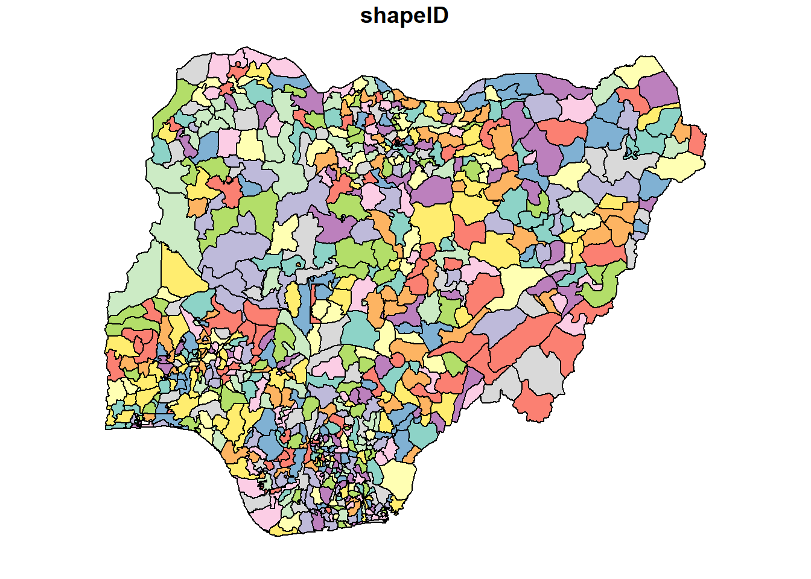
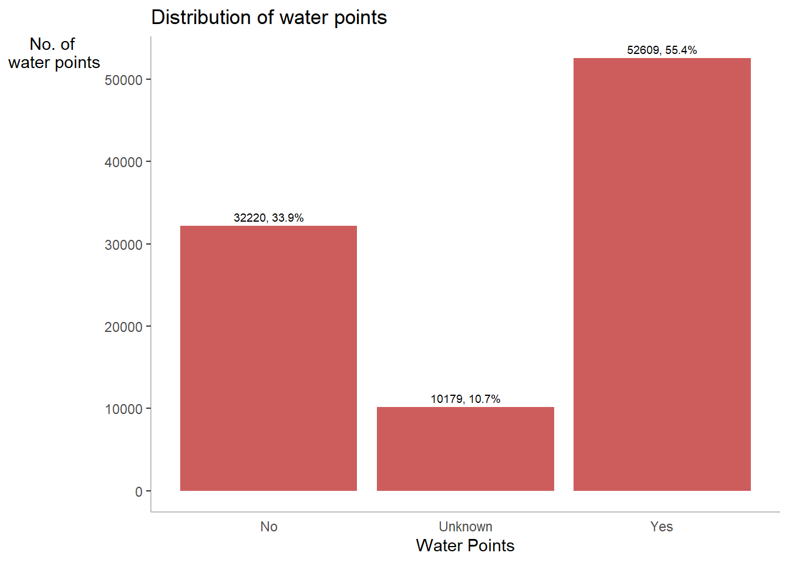
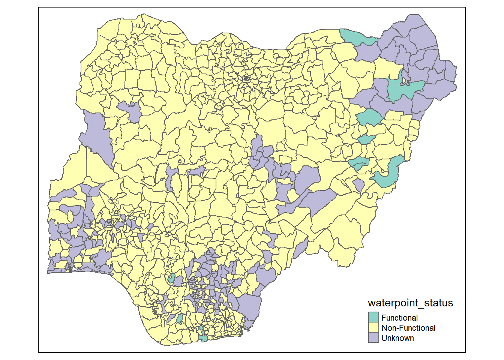
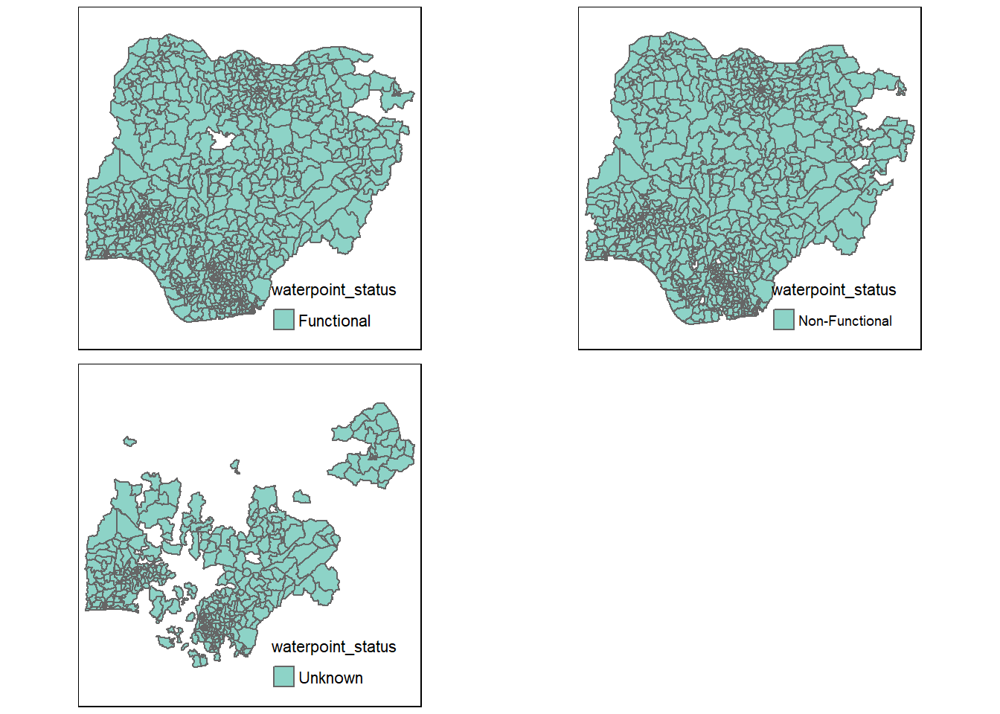

pacman::p_load(sf, tidyverse,spdep, tmap)Pump it Up with Geospatial Data - A data-driven approach to the exploration of spatial patterns of Non-Functional Waterpoints in Nigeria
1. Background
Developing countries are most affected by water shortages and poor water quality. Up to 80% of illnesses in the developing world are linked to inadequate water and sanitation. Despite technological advancement, providing clean water to the rural community is still a major development issues in many countries globally, especially countries in the Africa continent.
To address the issue of providing clean and sustainable water supply to the rural community, a global Water Point Data Exchange (WPdx) project has been initiated. The main aim of this initiative is to collect water point related data from rural areas at the water point or small water scheme level and share the data via WPdx Data Repository, a cloud-based data library.

2. Objective
The objective of the exercise is to apply appropriate global and local measures of spatial Association techniques to reveal the spatial patterns of Non Functional water points in Nigeria

3. Glimpse of Steps
Some of the important steps performed in this exercise are as follows
Importing shapefile into R using sf package.
Deriving the proportion of functional and non-functional water point at LGA level using appropriate tidyr and dplyr methods.
Combining the geospatial and aspatial data frame into simple feature data frame.
Performing outliers/clusters analysis by using appropriate local measures of spatial association methods.
Performing hotspot areas analysis by using appropriate local measures of spatial association methods.
Thematic Mapping - Plot maps to show the spatial distribution of functional and non-functional water point rate at LGA level by using appropriate thematic mapping technique provided by tmap package
Analytical Mapping - Plot hotspot areas and outliers/clusters maps of functional and non0functional water point rate at LGA level by using appropriate thematic mapping technique provided by tmap package
4. Data
5. Deep dive into map analysis
Loading packages
p_load function pf pacman package is used to install and load sf and tidyverse pacages into R environment.
Importing gesospatial data
The code chunk below uses st_read() function of sf package to import geoBoundaries-NGA-ADM2_simplified shapefile into R as a polygon feature data frame.
Two arguments are used :
dsn - destination : to define the data path
layer - to provide the shapefile name
ngaGeo <- st_read(dsn = "data/geospatial",
layer = "geoBoundaries-NGA-ADM2_simplified")Reading layer `geoBoundaries-NGA-ADM2_simplified' from data source
`D:\raveenaclr\Geospatial Analytics\TakeHomeEx\data\geospatial'
using driver `ESRI Shapefile'
Simple feature collection with 774 features and 5 fields
Geometry type: MULTIPOLYGON
Dimension: XY
Bounding box: xmin: 2.668534 ymin: 4.273007 xmax: 14.67868 ymax: 13.89442
Geodetic CRS: WGS 84The message above reveals that the geospatial objects are multipolygon features. There are a total of 774 multipolygon features and 5 fields in ngaGeo simple feature data frame. ngaGeo is in wgs84 coordinates systems
Checking the content of the sf
st_geometry(ngaGeo)Geometry set for 774 features
Geometry type: MULTIPOLYGON
Dimension: XY
Bounding box: xmin: 2.668534 ymin: 4.273007 xmax: 14.67868 ymax: 13.89442
Geodetic CRS: WGS 84
First 5 geometries:MULTIPOLYGON (((7.401109 5.081948, 7.387495 5.0...MULTIPOLYGON (((7.334479 5.104902, 7.337551 5.1...MULTIPOLYGON (((13.83477 13.42336, 13.80458 13....MULTIPOLYGON (((7.045872 9.230501, 7.026536 9.2...MULTIPOLYGON (((7.811244 5.094527, 7.815814 5.0...glimpse(ngaGeo)Rows: 774
Columns: 6
$ shapeName <chr> "Aba North", "Aba South", "Abadam", "Abaji", "Abak", "Abaka…
$ Level <chr> "ADM2", "ADM2", "ADM2", "ADM2", "ADM2", "ADM2", "ADM2", "AD…
$ shapeID <chr> "NGA-ADM2-72505758B79815894", "NGA-ADM2-72505758B67905963",…
$ shapeGroup <chr> "NGA", "NGA", "NGA", "NGA", "NGA", "NGA", "NGA", "NGA", "NG…
$ shapeType <chr> "ADM2", "ADM2", "ADM2", "ADM2", "ADM2", "ADM2", "ADM2", "AD…
$ geometry <MULTIPOLYGON [°]> MULTIPOLYGON (((7.401109 5...., MULTIPOLYGON (…head(ngaGeo)Simple feature collection with 6 features and 5 fields
Geometry type: MULTIPOLYGON
Dimension: XY
Bounding box: xmin: 6.778653 ymin: 4.888055 xmax: 13.83477 ymax: 13.71406
Geodetic CRS: WGS 84
shapeName Level shapeID shapeGroup shapeType
1 Aba North ADM2 NGA-ADM2-72505758B79815894 NGA ADM2
2 Aba South ADM2 NGA-ADM2-72505758B67905963 NGA ADM2
3 Abadam ADM2 NGA-ADM2-72505758B57073987 NGA ADM2
4 Abaji ADM2 NGA-ADM2-72505758B61968000 NGA ADM2
5 Abak ADM2 NGA-ADM2-72505758B39432389 NGA ADM2
6 Abakaliki ADM2 NGA-ADM2-72505758B36739173 NGA ADM2
geometry
1 MULTIPOLYGON (((7.401109 5....
2 MULTIPOLYGON (((7.334479 5....
3 MULTIPOLYGON (((13.83477 13...
4 MULTIPOLYGON (((7.045872 9....
5 MULTIPOLYGON (((7.811244 5....
6 MULTIPOLYGON (((8.4109 6.28...Plotting the Geospatial data
plot(ngaGeo)
plot(st_geometry(ngaGeo))
plot(ngaGeo["shapeID"])
Projection Transformation
st_crs(ngaGeo)Coordinate Reference System:
User input: WGS 84
wkt:
GEOGCRS["WGS 84",
DATUM["World Geodetic System 1984",
ELLIPSOID["WGS 84",6378137,298.257223563,
LENGTHUNIT["metre",1]]],
PRIMEM["Greenwich",0,
ANGLEUNIT["degree",0.0174532925199433]],
CS[ellipsoidal,2],
AXIS["geodetic latitude (Lat)",north,
ORDER[1],
ANGLEUNIT["degree",0.0174532925199433]],
AXIS["geodetic longitude (Lon)",east,
ORDER[2],
ANGLEUNIT["degree",0.0174532925199433]],
USAGE[
SCOPE["Horizontal component of 3D system."],
AREA["World."],
BBOX[-90,-180,90,180]],
ID["EPSG",4326]]ngaGeo26391 <- st_transform(ngaGeo,
crs = 26391)st_geometry(ngaGeo26391)Geometry set for 774 features
Geometry type: MULTIPOLYGON
Dimension: XY
Bounding box: xmin: 28879.72 ymin: 30292.37 xmax: 1343798 ymax: 1094244
Projected CRS: Minna / Nigeria West Belt
First 5 geometries:MULTIPOLYGON (((552560.3 120259.9, 551048.7 120...MULTIPOLYGON (((545153.6 122768, 545494.6 12275...MULTIPOLYGON (((1245549 1061222, 1242260 106060...MULTIPOLYGON (((510602.3 579214.8, 508482.5 578...MULTIPOLYGON (((598086 121871.3, 598596.1 12133...Importing aspatial data
Since nigeria_waterpoints data set is in csv file format, we will use read_csv() of readr package to import nigeria_waterpoints.csv as shown the code chunk below. The output R object is called ngawaterpoints and it is a tibble data frame.
ngawaterpoints <- read_csv("data/aspatial/nigeria_waterpoints.csv")Warning: One or more parsing issues, see `problems()` for detailsRows: 95008 Columns: 70
── Column specification ────────────────────────────────────────────────────────
Delimiter: ","
chr (38): #source, #report_date, #status_id, #water_source_clean, #water_sou...
dbl (20): row_id, #lat_deg, #lon_deg, #install_year, #distance_to_primary_ro...
lgl (12): #clean_adm3, #clean_adm4, #installer, #rehab_year, #rehabilitator,...
ℹ Use `spec()` to retrieve the full column specification for this data.
ℹ Specify the column types or set `show_col_types = FALSE` to quiet this message.After importing the data file into R, it is important for us to examine if the data file has been imported correctly. The code chunk below shows list() of Base R instead of glimpse() is used to do the job.
list(ngawaterpoints)[[1]]
# A tibble: 95,008 × 70
row_id `#source` #lat_…¹ #lon_…² #repo…³ #stat…⁴ #wate…⁵ #wate…⁶ #wate…⁷
<dbl> <chr> <dbl> <dbl> <chr> <chr> <chr> <chr> <chr>
1 429068 GRID3 7.98 5.12 08/29/… Unknown <NA> <NA> Tapsta…
2 222071 Federal Minis… 6.96 3.60 08/16/… Yes Boreho… Well Mechan…
3 160612 WaterAid 6.49 7.93 12-04-… Yes Boreho… Well Hand P…
4 160669 WaterAid 6.73 7.65 12-04-… Yes Boreho… Well <NA>
5 160642 WaterAid 6.78 7.66 12-04-… Yes Boreho… Well Hand P…
6 160628 WaterAid 6.96 7.78 12-04-… Yes Boreho… Well Hand P…
7 160632 WaterAid 7.02 7.84 12-04-… Yes Boreho… Well Hand P…
8 642747 Living Water … 7.33 8.98 10-03-… Yes Boreho… Well Mechan…
9 642456 Living Water … 7.17 9.11 10-03-… Yes Boreho… Well Hand P…
10 641347 Living Water … 7.20 9.22 03/28/… Yes Boreho… Well Hand P…
# … with 94,998 more rows, 61 more variables: `#water_tech_category` <chr>,
# `#facility_type` <chr>, `#clean_country_name` <chr>, `#clean_adm1` <chr>,
# `#clean_adm2` <chr>, `#clean_adm3` <lgl>, `#clean_adm4` <lgl>,
# `#install_year` <dbl>, `#installer` <lgl>, `#rehab_year` <lgl>,
# `#rehabilitator` <lgl>, `#management_clean` <chr>, `#status_clean` <chr>,
# `#pay` <chr>, `#fecal_coliform_presence` <lgl>,
# `#fecal_coliform_value` <lgl>, `#subjective_quality` <chr>, …
# ℹ Use `print(n = ...)` to see more rows, and `colnames()` to see all variable namesThe output reveals that ngawaterpoints tibble data frame consists of 95,008 rows and 70 columns. Two useful fields we are going to use in the next phase are latitude and longitude, they are in decimal degree format as the data is in wgs84 Geographic Coordinate System.
Creating a simple feature data frame from an aspatial data frame
The code chunk below converts ngawaterpoints data frame into a simple feature data frame by using st_as_sf() of sf packages
ngawater_sf <- st_as_sf(ngawaterpoints ,
coords = c("#lon_deg", "#lat_deg"),
crs=4326) %>%
st_transform(crs = 26391)Let us examine the content
glimpse(ngawater_sf)Rows: 95,008
Columns: 69
$ row_id <dbl> 429068, 222071, 160612, 160669, 160642, …
$ `#source` <chr> "GRID3", "Federal Ministry of Water Reso…
$ `#report_date` <chr> "08/29/2018 12:00:00 AM", "08/16/2015 12…
$ `#status_id` <chr> "Unknown", "Yes", "Yes", "Yes", "Yes", "…
$ `#water_source_clean` <chr> NA, "Borehole", "Borehole", "Borehole", …
$ `#water_source_category` <chr> NA, "Well", "Well", "Well", "Well", "Wel…
$ `#water_tech_clean` <chr> "Tapstand", "Mechanized Pump", "Hand Pum…
$ `#water_tech_category` <chr> "Tapstand", "Mechanized Pump", "Hand Pum…
$ `#facility_type` <chr> "Improved", "Improved", "Improved", "Imp…
$ `#clean_country_name` <chr> "Nigeria", "Nigeria", "Nigeria", "Nigeri…
$ `#clean_adm1` <chr> "Ekiti", "Ogun", "Ebonyi", "Enugu", "Enu…
$ `#clean_adm2` <chr> "Moba", "Obafemi-Owode", "Ohaukwu", "Isi…
$ `#clean_adm3` <lgl> NA, NA, NA, NA, NA, NA, NA, NA, NA, NA, …
$ `#clean_adm4` <lgl> NA, NA, NA, NA, NA, NA, NA, NA, NA, NA, …
$ `#install_year` <dbl> NA, NA, NA, NA, NA, NA, NA, 2016, 2016, …
$ `#installer` <lgl> NA, NA, NA, NA, NA, NA, NA, NA, NA, NA, …
$ `#rehab_year` <lgl> NA, NA, NA, NA, NA, NA, NA, NA, NA, NA, …
$ `#rehabilitator` <lgl> NA, NA, NA, NA, NA, NA, NA, NA, NA, NA, …
$ `#management_clean` <chr> NA, "Other", NA, NA, NA, NA, NA, NA, NA,…
$ `#status_clean` <chr> NA, "Functional", NA, NA, NA, NA, NA, NA…
$ `#pay` <chr> NA, "No", NA, NA, NA, NA, NA, NA, NA, NA…
$ `#fecal_coliform_presence` <lgl> NA, NA, NA, NA, NA, NA, NA, NA, NA, NA, …
$ `#fecal_coliform_value` <lgl> NA, NA, NA, NA, NA, NA, NA, NA, NA, NA, …
$ `#subjective_quality` <chr> NA, "Acceptable quality", NA, NA, NA, NA…
$ `#activity_id` <chr> "1a117ba2-5256-4801-874c-f7611a4499dd", …
$ `#scheme_id` <lgl> NA, NA, NA, NA, NA, NA, NA, NA, NA, NA, …
$ `#wpdx_id` <chr> "6FV7X4JC+222", "6FR5XH7X+R37", "6FR9FWP…
$ `#notes` <chr> "Tap Water", "Ajura", NA, NA, NA, NA, NA…
$ `#orig_lnk` <chr> "https://nigeria.africageoportal.com/dat…
$ `#photo_lnk` <chr> NA, NA, NA, NA, NA, NA, NA, NA, NA, NA, …
$ `#country_id` <chr> "NG", "NG", "NG", "NG", "NG", "NG", "NG"…
$ `#data_lnk` <chr> "https://catalog.waterpointdata.org/data…
$ `#distance_to_primary_road` <dbl> 767.3742, 13364.9005, 9492.7619, 9319.08…
$ `#distance_to_secondary_road` <dbl> 921.79187, 48.87743, 4333.34279, 23276.3…
$ `#distance_to_tertiary_road` <dbl> 3146.733237, 4167.519068, 693.211204, 30…
$ `#distance_to_city` <dbl> 41049.944, 13898.649, 27381.922, 34823.6…
$ `#distance_to_town` <dbl> 959.365, 9405.783, 72060.118, 31665.447,…
$ water_point_history <chr> "{\"2018-08-29\": {\"source\": \"GRID3\"…
$ rehab_priority <dbl> NA, NA, NA, NA, NA, NA, NA, NA, NA, NA, …
$ water_point_population <dbl> NA, 140, 0, 492, 868, 81, 0, 9969, 933, …
$ local_population_1km <dbl> NA, 887, 0, 492, 1919, 81, 0, 13740, 933…
$ crucialness_score <dbl> NA, 0.1578354, NA, 1.0000000, 0.4523189,…
$ pressure_score <dbl> NA, 0.1400000, NA, 1.6400000, 2.8933333,…
$ usage_capacity <dbl> 250, 1000, 300, 300, 300, 300, 300, 1000…
$ is_urban <lgl> TRUE, FALSE, FALSE, FALSE, FALSE, FALSE,…
$ days_since_report <dbl> 1483, 2592, 655, 655, 655, 655, 655, 217…
$ staleness_score <dbl> 62.65911, 44.17405, 81.34550, 81.34550, …
$ latest_record <lgl> TRUE, TRUE, TRUE, TRUE, TRUE, TRUE, TRUE…
$ location_id <dbl> 358773, 264633, 397972, 397984, 397982, …
$ cluster_size <dbl> 1, 1, 1, 1, 1, 1, 1, 1, 1, 1, 1, 1, 1, 1…
$ `#clean_country_id` <chr> "NGA", "NGA", "NGA", "NGA", "NGA", "NGA"…
$ `#country_name` <chr> "Nigeria", "Nigeria", "Nigeria", "Nigeri…
$ `#water_source` <chr> "Tap", "Improved Tube well or borehole",…
$ `#water_tech` <chr> NA, "Motorised", NA, NA, NA, NA, NA, "Su…
$ `#status` <chr> NA, "Functional (and in use)", NA, NA, N…
$ `#adm2` <chr> NA, "Obafemi-Owode", NA, NA, NA, NA, NA,…
$ `#adm3` <chr> NA, NA, NA, NA, NA, NA, NA, NA, NA, NA, …
$ `#management` <chr> NA, "Other", NA, NA, NA, NA, NA, NA, NA,…
$ `#adm1` <chr> NA, "Ogun", "Enugu", "Enugu", "Enugu", "…
$ `New Georeferenced Column` <chr> "POINT (5.12 7.98)", "POINT (3.5976683 6…
$ lat_deg_original <lgl> NA, NA, NA, NA, NA, NA, NA, NA, NA, NA, …
$ lat_lon_deg <chr> "(7.98°, 5.12°)", "(6.9645317°, 3.597668…
$ lon_deg_original <lgl> NA, NA, NA, NA, NA, NA, NA, NA, NA, NA, …
$ public_data_source <chr> "https://catalog.waterpointdata.org/data…
$ converted <chr> NA, "#status_id, #water_source, #pay, #s…
$ count <dbl> 1, 1, 1, 1, 1, 1, 1, 1, 1, 1, 1, 1, 1, 1…
$ created_timestamp <chr> "12-06-2021 21:12", "06/30/2020 12:56:07…
$ updated_timestamp <chr> "12-06-2021 21:12", "06/30/2020 12:56:07…
$ geometry <POINT [m]> POINT (299162.4 439998.2), POINT (…We can see that latitude (#lat_deg) and longitude (#long_deg) columns are dropped from the data frame and geometry column is added.
Proportion of functional and non-functional water points
unique(ngawater_sf$`#status_clean`)[1] NA "Functional"
[3] "Abandoned/Decommissioned" "Non-Functional"
[5] "Functional but not in use" "Functional but needs repair"
[7] "Abandoned" "Non functional due to dry season"
[9] "Non-Functional due to dry season"Let us classify status_clean into 2 types - functional and non-functional
ngawater_sf <-ngawater_sf %>%
mutate(waterpoint_status=recode(`#status_clean`,
'Abandoned'='Non-Functional',
'Abandoned/Decommissioned'='Non-Functional',
'Non functional due to dry season'='Non-Functional',
'Non-Functional due to dry season'='Non-Functional',
'Functional but not in use'='Functional',
'Functional but needs repair'= 'Functional'))unique(ngawater_sf$waterpoint_status)[1] NA "Functional" "Non-Functional"ggplot(data= ngawater_sf,
aes(x= `#status_id`)) +
geom_bar(fill= '#CD5C5C') +
#ylim(0, 150) +
geom_text(stat = 'count',
aes(label= paste0(stat(count), ', ',
round(stat(count)/sum(stat(count))*100,
1), '%')), vjust= -0.5, size= 2.5) +
labs(y= 'No. of \nwater points',
x= 'Water Points',
title = "Distribution of water points") +
theme(axis.title.y= element_text(angle=0),
axis.ticks.x= element_blank(),
panel.background= element_blank(),
axis.line= element_line(color= 'grey'))
df <- ngawater_sf %>%
group_by(waterpoint_status) %>%
tally() %>%
group_by(waterpoint_status) %>%
mutate(total=sum(n),prop=round(n*100/total)) %>%
ungroup()
dfSimple feature collection with 3 features and 4 fields
Geometry type: MULTIPOINT
Dimension: XY
Bounding box: xmin: 32536.82 ymin: 33461.24 xmax: 1292096 ymax: 1091052
Projected CRS: Minna / Nigeria West Belt
# A tibble: 3 × 5
waterpoint_status n geometry total prop
<chr> <int> <MULTIPOINT [m]> <int> <dbl>
1 Functional 52148 ((32984.86 263213.1), (36422.08 290724), … 52148 100
2 Non-Functional 32204 ((32536.82 267717.4), (32638.91 267672.1)… 32204 100
3 <NA> 10656 ((32804.9 263387.6), (33930.67 268914.4),… 10656 100Combining geospatial and aspatial df into simple feature dataframe
nga_sf <- st_join(ngaGeo26391, ngawater_sf,
by = c("shapeName" = "#clean_adm2"))write_csv(nga_sf,"nga_sf.csv")nga_sf <- nga_sf %>%
mutate(waterpoint_status = replace_na(waterpoint_status, "Unknown"))thematic_map <- qtm(nga_sf, "waterpoint_status")
thematic_map
func_waterpoint <- nga_sf %>%
filter(waterpoint_status == "Functional")
non_func_waterpoint <- nga_sf %>%
filter(waterpoint_status == "Non-Functional")
unk_waterpoint <- nga_sf %>%
filter(waterpoint_status == "Unknown")wp_functional <- qtm(func_waterpoint, "waterpoint_status")
wp_nonfunctional <- qtm(non_func_waterpoint, "waterpoint_status")
unknown <- qtm(unk_waterpoint, "waterpoint_status")
tmap_arrange(wp_functional, wp_nonfunctional, unknown, asp=1, ncol=2)Legend labels were too wide. The labels have been resized to 0.58. Increase legend.width (argument of tm_layout) to make the legend wider and therefore the labels larger.
Cluster and Outlier Analysis
Let us see how to apply appropriate Local Indicators for Spatial Association (LISA), especially local Moran’I to detect cluster and/or outlier from GDP per capita 2012 of Hunan Province, PRC.
Local Indicators of Spatial Association or LISA are statistics that evaluate the existence of clusters in the spatial arrangement of a given variable. For instance if we are studying cancer rates among census tracts in a given city local clusters in the rates mean that there are areas that have higher or lower rates than is to be expected by chance alone; that is, the values occurring are above or below those of a random distribution in space.
The analysis consists of five steps:
Deriving spatial weights matrix
Computing local Moran’s I
Plotting Moran scatterplot
Mapping local Moran’s I
Plotting LISA map